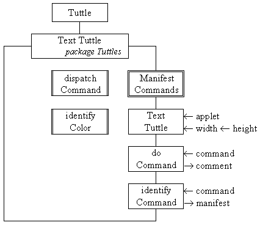

The class diagram for the TextTuttle class is presented in Figure 7.1.

Figure 7.1 The TextTuttle class diagram.
The constructor has the same effect as the Tuttle constructor, requesting a tuttle drawing area with the dimensions specified and passing the identity of the applet for use by the tuttle. The other public attributes shown on the diagram are the manifest values of all the commands which the TextTuttle will respond to. The identifyCommand() method will attempt to return the manifest value of the command contained in the String argument command, or the value UNKNOWN, if it cannot be recognised. The remaining method, doCommand(), will take a complete command String and attempt to execute it. If it is possible for the TextTuttle to process the instruction, doCommand() will return an empty String in comment, otherwise it will contain an explanation of why the instruction could not be obeyed. The class diagram also shows two private methods called doCommand() and identifyColor() whose use will be described below. The implementation of this class, as far as the end of the constructor, is as follows.
0001 // Filename TextTuttle.java.
0002 // Extends the Tuttle class by providing a text
0003 // interface for its commands.
0004 //
0005 // Written for the Java Interface Book Chapter 7.
0006 // Fintan Culwin, v 0.2, August 1997.
0007
0008 package Tuttles;
0009
0010 import java.awt.*;
0011 import java.applet.*;
0012 import java.util.StringTokenizer;
0013
0014 import Tuttles.Tuttle;
0015
0016 public class TextTuttle extends Tuttle {
0017
0018 public static final int UNKNOWN = -1;
0019 public static final int FORWARD = 0;
0020 public static final int BACKWARD = 1;
0021 public static final int TURN_RIGHT = 2;
0022 public static final int TURN_LEFT = 3;
0023 public static final int FOREGROUND = 4;
0024 public static final int BACKGROUND = 5;
0025 public static final int PEN_UP = 6;
0026 public static final int PEN_DOWN = 7;
0027 public static final int CLEAR = 8;
0028 public static final int RESET = 9;
0029 public static final int CLEAR_AND_RESET = 10;
0030 public static final int EXIT = 11;
0031 public static final int MAX_COMMANDS = 11;
0032
0033 private static final String[] commands =
0034 { "fd", "bd", "tr", "tl",
0035 "fg", "bg", "pu", "pd",
0036 "cl", "rs", "cr",
0037 "exit" };
0038
0039
0040 public TextTuttle( Applet applet, int width, int height) {
0041 super( applet, width, height);
0042 } // End TextTuttle constructor.
The manifest values for the commands are enumerated on lines 0018 to 0031, with delimiting values for UNKNOWN commands and for the maximum number of commands. The declaration of the String array commands[], on lines 0033 to 0037, provides the corresponding two letter abbreviation for each command, apart from the "exit" command. Finally, in this part, the constructor is implemented as a dispatching call of the parent, Tuttle, constructor. The doCommand() method relies upon the identifyCommand() method; the implementation of these two methods is as follows.
0045 public String doCommand( String theCommand) {
0046
0047 StringTokenizer tokenizer = new StringTokenizer( theCommand);
0048 String firstTerm = null;
0049 String theReply;
0050
0051 int thisCommand = UNKNOWN;
0052
0053 if ( tokenizer.hasMoreTokens()) {
0054 firstTerm = tokenizer.nextToken().toLowerCase();
0055 thisCommand = identifyCommand( firstTerm);
0056
0057 if ( thisCommand == UNKNOWN ) {
0058 theReply = new String( "The command " + firstTerm +
0059 " is not known!");
0060 } else {
0061 theReply = dispatchCommand( thisCommand, tokenizer);
0062 } // End if.
0063 } else {
0064 theReply = new String( "There does not seem to be a command given!");
0065 } // End if.
0066 return theReply;
0067 } // End doCommand.
0068
0069
0070 public int identifyCommand( String toIdentify) {
0071
0072 int thisCommand = MAX_COMMANDS;
0073 int identified = UNKNOWN;
0074
0075 while ( ( identified == UNKNOWN) &&
0076 ( thisCommand != UNKNOWN) ){
0077 if ( toIdentify.equals( commands[ thisCommand])) {
0078 identified = thisCommand;
0079 } else {
0080 thisCommand--;
0081 } // End if.
0082 } // End while.
0083 return identified;
0084 } // End identifyCommand.
The doCommand() method commences, on line 0047, by constructing a StringTokenizer instance called tokenizer which will be used to split its single String argument, theCommand, into its constituent parts. The provision of a suitable command to this method is the responsibility of the tuttle text interfaces, as will be described below.
Having initialised the tokenizer, on line 0053, the tokenizer hasMoreTokens() method is used to make sure that theCommand is not empty and, if it is, theReply is prepared with a suitable message on line 0064. Otherwise the firstTerm is obtained from the tokenizer on line 0054 and identified, using identifyCommand(), on line 0055. If the firstTerm is not identified a suitable reply is placed into theReply on lines 0058 and 0059. If this is not the case then the firstTerm has been identified as a valid command and it is processed by the private dispatchCommand() method, on line 0061, passing as the second argument the tokenizer which still contains any remaining terms. In this case the String returned by dispatchCommand() is stored in theReply to be returned as the result of the doCommand() method, on line 0066.
The identifyCommand() method, on lines 0070 to 0084, is a sequential search of the commands[] array. It returns the appropriate manifest value identifying the command contained in its toIdentify argument, or the value UNKNOWN if it does not contain a valid command. Should additional commands be added during maintenance, then additional manifest values can be added to the list and their string representation to the commands[] array, and this method will still operate correctly.
The dispatchCommand() method has the responsibility of checking any arguments of the Tuttle command and returning an appropriate message should too many, too few or an inappropriate argument be supplied. If the arguments do prove to be acceptable the appropriate method of the parent, Tuttle, class should be called and an empty String returned.
The first part of its implementation, as follows, is concerned with processing those commands which require a single integer argument: forwards, backwards, turn left and turn right. .
0087 private String dispatchCommand( int theCommand,
0088 StringTokenizer arguments){
0089
0090 StringBuffer theResponse = new StringBuffer( "");
0091 boolean processed = false;
0092
0093 switch( theCommand) {
0094
0095 case FORWARD:
0096 case BACKWARD:
0097 case TURN_RIGHT:
0098 case TURN_LEFT:
0099 if (arguments.countTokens() == 1) {
0100 int toStepOrTurn;
0101 try {
0102 toStepOrTurn = Integer.parseInt( arguments.nextToken());
0103 switch ( theCommand) {
0104 case FORWARD:
0105 this.forward( toStepOrTurn);
0106 break;
0107 case BACKWARD:
0108 this.backward( toStepOrTurn);
0109 break;
0110 case TURN_RIGHT:
0111 this.turnRight( toStepOrTurn);
0112 break;
0113 case TURN_LEFT:
0114 this.turnLeft( toStepOrTurn);
0115 break;
0116 } // End switch.
0117 processed = true;
0118 } catch ( NumberFormatException exception) {
0119 processed = false;
0120 } // End try/ catch.
0121 } // End if.
0122 if ( !processed) {
0123 theResponse.append( commands[ theCommand] +
0124 " should be followed by a single number.");
0125 } // End if.
0126 break;
The switch structure starting on line 0093 is controlled by the manifest value of theCommand, passed to dispatchCommand() from the doCommand() method. On lines 0095 to 0098 the first branch of the outer switch statement starting on line 0093 lists, as case selectors, the manifest values of the commands which require a single integer argument.
The processing of these commands commences, on line 0099, with a check to make sure that only a single argument remains in the StringTokenizer instance called arguments, which was passed from the doCommand() method. If this is so then, on line 0102, an attempt is made, within a try/ catch structure, to interpret this argument as an integer and store it in the local variable toStepOrTurn. Assuming that an exception is not throw a second inner switch structure, between lines 0103 and 0116, dispatches to a call of the appropriate Tuttle method passing the value of toStepOrTurn as its argument. The final stage of the try part of the try/ catch structure sets the processed flag true.
If the command has not been processed, either because there are too many or too few arguments, or because the single argument does not contain an integer value, the value of processed will be false, unchanged from its declaration on line 0091. This will cause a suitable message to be placed into the StringBuffer theResponse, on lines 0123 to 0124. Finally, on line 0126, this part of the switch structure which started on line 0093 is completed with a break statement.
For example if the doCommand() method were called with the String "fd 30". The fd part of the command would be extracted and identified by identifyCommand() as the manifest value FORWARD. This will cause dispachCommand() to be called with FORWARD as its first, theCommand, argument and the StringTokenizer, still containing "30" as its second argument. The value FORWARD will match the selector on line 0095 and cause the switch branch commencing on line 0099 to be executed. The if condition on line 0099 would evaluate true and so the try/ catch structure on line 0101 would be attempted. As "30" can be interpreted as the integer value 30, no exception would be thrown on line 0102 and the inner switch structure on line 0103 would be considered. The value FORWARD in theCommand would cause line 0105 to be executed. This is a call of the Tuttle forward() method, inherited by the TextTuttle class, and will result in the tuttle moving forwards 30 steps. The next line to be executed would be line 0117 setting the value of the processed flag true and avoiding any message being placed into theResponse on lines 0123 and 0124.
Alternatively if the command received by the doCommand() method were "fd" or "fd 30 please", the command would still be identified as FORWARD but the if condition on line 0099 would be false and result in lines 0123 and 0124 placing a suitable message in theResponse. This would also happen if the command were "fd please": the condition on line 0099 would now be true but the attempted conversion of "please" to an integer, on line 0102 would throw a NumberFormatException which, when it was caught on line 0118, would set the processed flag to cause the message to be placed in to theResponse, as before.
The next part of the dispatchCommand() method processes those actions which require no arguments: pen up, pen down, reset, clear and clear and reset. Its implementation, which follows, is similar to the previous fragment.
0128 case PEN_UP:
0129 case PEN_DOWN:
0130 case RESET:
0131 case CLEAR:
0132 case CLEAR_AND_RESET:
0133 if (arguments.countTokens() == 0) {
0134 switch ( theCommand) {
0135 case PEN_UP:
0136 this.setPenUp();
0137 break;
0138 case PEN_DOWN:
0139 this.setPenDown();
0140 break;
0141 case RESET:
0142 this.resetTuttle();
0143 break;
0144 case CLEAR:
0145 this.clearTuttleArea();
0146 break;
0147 case CLEAR_AND_RESET:
0148 this.clearAndReset();
0149 break;
0150 } // End switch.
0151 processed = true;
0152 } // End if.
0153 if ( !processed) {
0154 theResponse.append( commands[ theCommand] +
0155 " should not be followed by anything.");
0156 } // End if.
0157 break;
Line 0133 ensures that no arguments have been supplied and if this is so then an inner switch structure, between lines 0134 to 0150 dispatches to a call of the appropriate parent Tuttle method. Should any arguments be supplied then lines 0154 to 0155 will place an appropriate message in theResponse. The next part of the method deals with the foreground and background commands, which require a single argument identifying one of the six acceptable Tuttle colors.
0159 case FOREGROUND:
0160 case BACKGROUND:
0161 if (arguments.countTokens() == 1) {
0162 Color theColor;
0163 theColor = identifyColor( arguments.nextToken().toLowerCase());
0164 if ( theColor != null) {
0165 if ( theCommand == FOREGROUND) {
0166 this.setForeground( theColor);
0167 } else {
0168 this.setBackground( theColor);
0169 } // End if.
0170 processed = true;
0171 } // End if.
0172 } // End if.
0173 if ( !processed) {
0174 theResponse.append( commands[ theCommand] +
0175 " should only be followed by white, black, red, " +
0176 "blue, green or yellow.");
0177 } // End if.
0178 break;
0179 } // End switch.
0180 return theResponse.toString();
0181 } // End dispatchCommand.
Line 0164 uses the private identifyColor() method to decide if a valid color name has been supplied in the single argument. The implementation of the identifyColor() method is given below. If the color name is recognized the appropriate tuttle command is called, otherwise a message is placed into theResponse. The dispatchCommand() method concludes, on line 0180, by returning the String contained in theResponse, which will be empty if the command has been passed to the tuttle or will contain a suitable message otherwise.
0185 private Color identifyColor( String possibleColor) {
0186
0187 Color theColor = null;
0188 if ( possibleColor.equals( "black")) {
0189 theColor = Color.black;
0190 } else if ( possibleColor.equals( "white")) {
0191 theColor = Color.white;
0192 } else if ( possibleColor.equals( "yellow")) {
0193 theColor = Color.yellow;
0194 } else if ( possibleColor.equals( "green")) {
0165 theColor = Color.green;
0196 } else if ( possibleColor.equals( "red")) {
0197 theColor = Color.red;
0198 } else if ( possibleColor.equals( "blue")) {
0199 theColor = Color.blue;
0200 } // End if.
0201 return theColor;
0202 } // End IdentifyColor.
The dispatchCommand() method does not attempt to process the exit command because, as explained in the previous chapter, exiting from an application must be the responsibility of a translation module not of an application module. The processing of the exit command will be described in the two text interfaces later in this chapter.
This completes the implementation of the TextTuttle class but a complete demonstration of its effectiveness cannot be provided until the CommandLineTuttle interface is considered later in this chapter. However a partial demonstration is contained with the TextMenuTuttle class which follows.